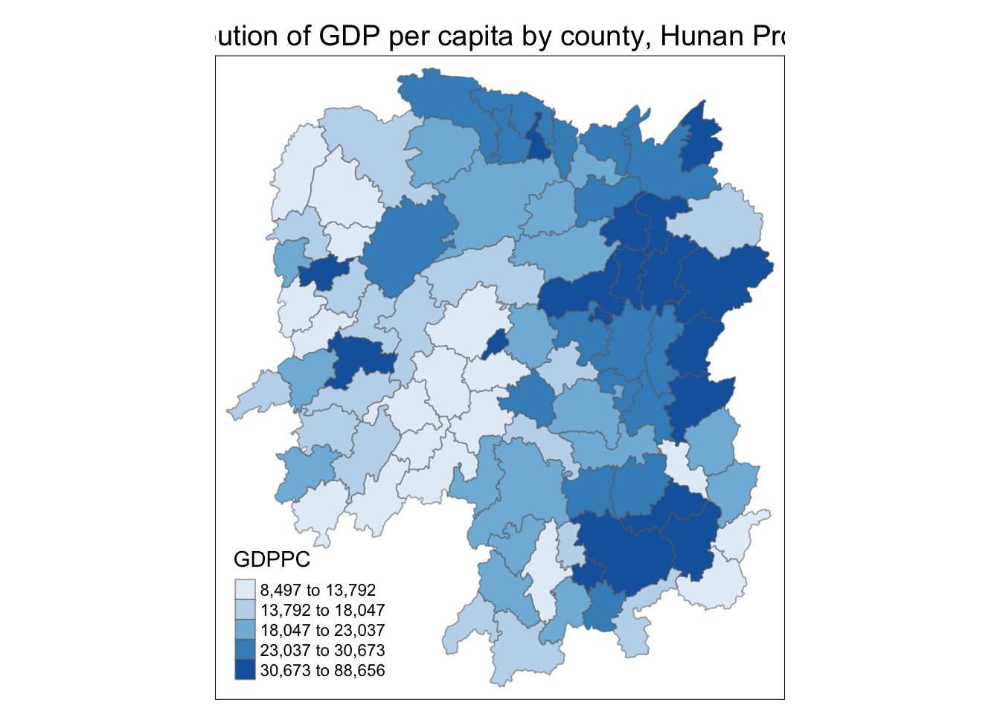
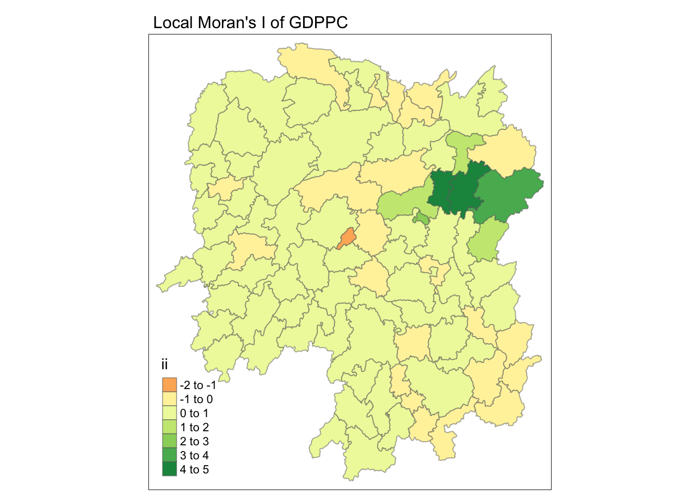
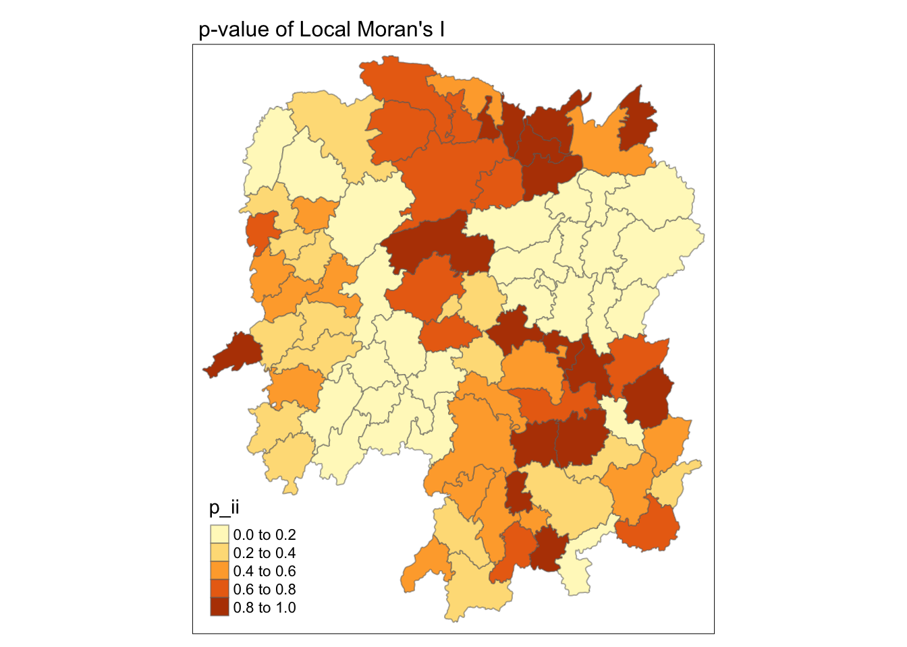
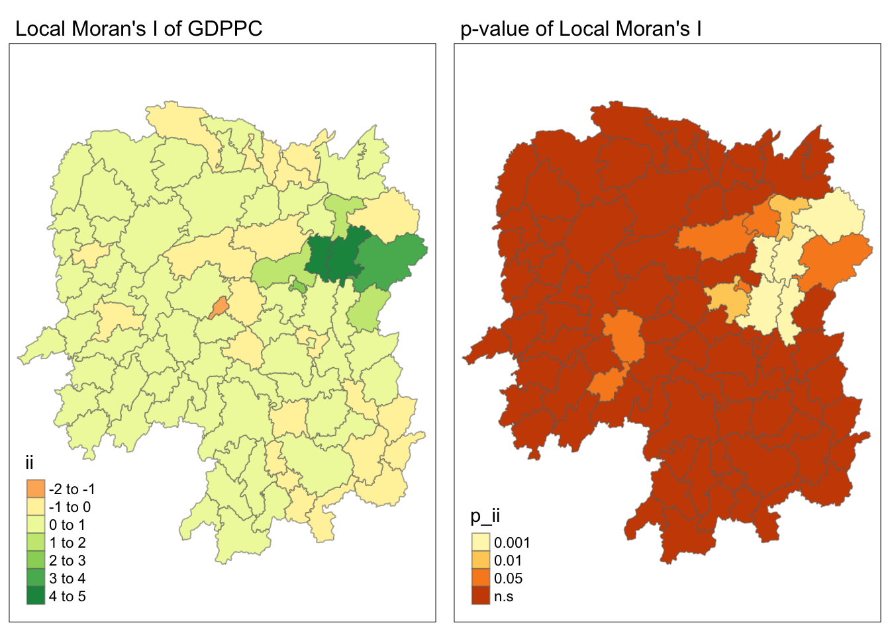
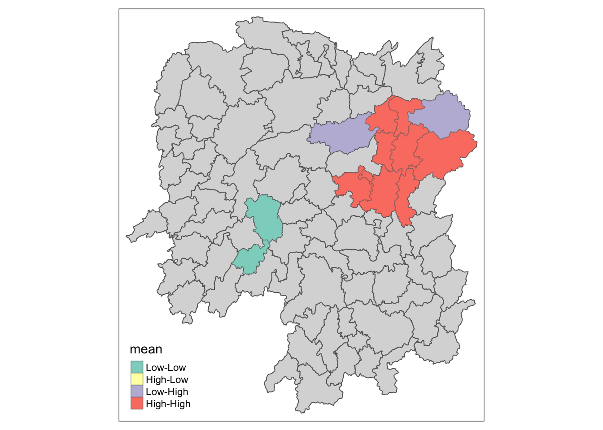
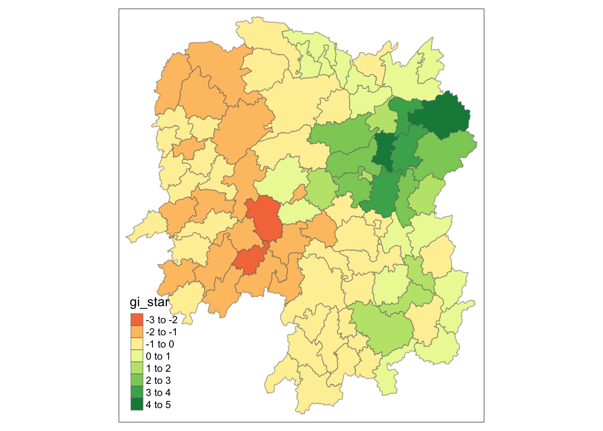
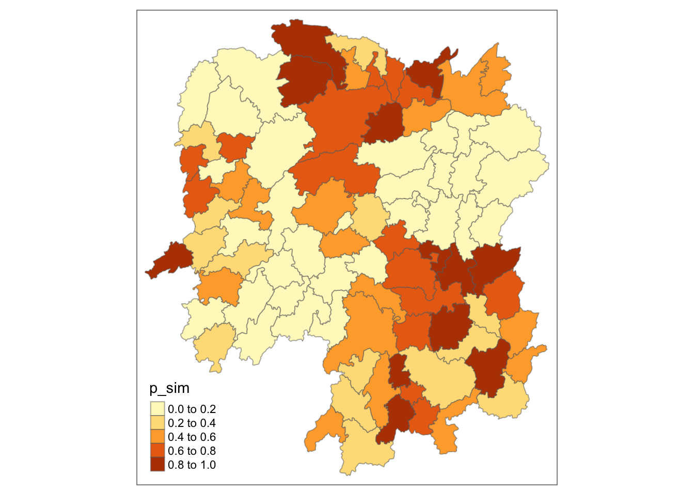
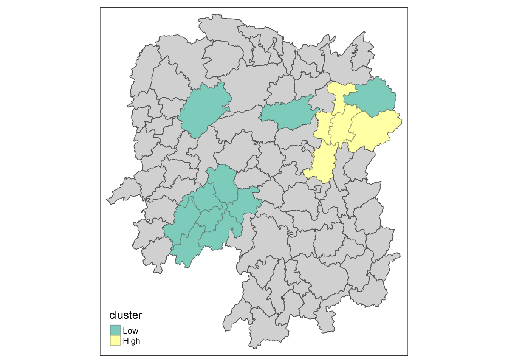

pacman::p_load(sf, sfdep, tmap, tidyverse)In-class Ex 5
Overview
In this in-class exercise, we will use R’s sfdep package for global and local measures of spatial association analysis.
1. Importing & Transforming Data
Two datasets will be used in this in-class exercise:
- Hunan County Boundary Layer: A geospatial dataset in ESRI shapefile format.
- Hunan_2012.csv: A CSV file containing selected local development indicators for Hunan in 2012.
In this in-class exercise, there’s no need to convert the Geographical Coordinate System to a projected coordinate system. The package used for calculating distances between neighbors automatically converts the Geographical Coordinate System into kilometers.
hunan_sf <- st_read(dsn = "data/geospatial",
layer = "Hunan") Reading layer `Hunan' from data source
`/Users/stephentay/stephentay/ISSS626-Geospatial-Analytics/In-class_Ex/In-class_Ex05/data/geospatial'
using driver `ESRI Shapefile'
Simple feature collection with 88 features and 7 fields
Geometry type: POLYGON
Dimension: XY
Bounding box: xmin: 108.7831 ymin: 24.6342 xmax: 114.2544 ymax: 30.12812
Geodetic CRS: WGS 84hunan2012 <- read_csv("data/aspatial/Hunan_2012.csv")
glimpse(hunan2012)Rows: 88
Columns: 29
$ County <chr> "Anhua", "Anren", "Anxiang", "Baojing", "Chaling", "Changn…
$ City <chr> "Yiyang", "Chenzhou", "Changde", "Hunan West", "Zhuzhou", …
$ avg_wage <dbl> 30544, 28058, 31935, 30843, 31251, 28518, 54540, 28597, 33…
$ deposite <dbl> 10967.0, 4598.9, 5517.2, 2250.0, 8241.4, 10860.0, 24332.0,…
$ FAI <dbl> 6831.7, 6386.1, 3541.0, 1005.4, 6508.4, 7920.0, 33624.0, 1…
$ Gov_Rev <dbl> 456.72, 220.57, 243.64, 192.59, 620.19, 769.86, 5350.00, 1…
$ Gov_Exp <dbl> 2703.0, 1454.7, 1779.5, 1379.1, 1947.0, 2631.6, 7885.5, 11…
$ GDP <dbl> 13225.0, 4941.2, 12482.0, 4087.9, 11585.0, 19886.0, 88009.…
$ GDPPC <dbl> 14567, 12761, 23667, 14563, 20078, 24418, 88656, 10132, 17…
$ GIO <dbl> 9276.90, 4189.20, 5108.90, 3623.50, 9157.70, 37392.00, 513…
$ Loan <dbl> 3954.90, 2555.30, 2806.90, 1253.70, 4287.40, 4242.80, 4053…
$ NIPCR <dbl> 3528.3, 3271.8, 7693.7, 4191.3, 3887.7, 9528.0, 17070.0, 3…
$ Bed <dbl> 2718, 970, 1931, 927, 1449, 3605, 3310, 582, 2170, 2179, 1…
$ Emp <dbl> 494.310, 290.820, 336.390, 195.170, 330.290, 548.610, 670.…
$ EmpR <dbl> 441.4, 255.4, 270.5, 145.6, 299.0, 415.1, 452.0, 127.6, 21…
$ EmpRT <dbl> 338.0, 99.4, 205.9, 116.4, 154.0, 273.7, 219.4, 94.4, 174.…
$ Pri_Stu <dbl> 54.175, 33.171, 19.584, 19.249, 33.906, 81.831, 59.151, 18…
$ Sec_Stu <dbl> 32.830, 17.505, 17.819, 11.831, 20.548, 44.485, 39.685, 7.…
$ Household <dbl> 290.4, 104.6, 148.1, 73.2, 148.7, 211.2, 300.3, 76.1, 139.…
$ Household_R <dbl> 234.5, 121.9, 135.4, 69.9, 139.4, 211.7, 248.4, 59.6, 110.…
$ NOIP <dbl> 101, 34, 53, 18, 106, 115, 214, 17, 55, 70, 44, 84, 74, 17…
$ Pop_R <dbl> 670.3, 243.2, 346.0, 184.1, 301.6, 448.2, 475.1, 189.6, 31…
$ RSCG <dbl> 5760.60, 2386.40, 3957.90, 768.04, 4009.50, 5220.40, 22604…
$ Pop_T <dbl> 910.8, 388.7, 528.3, 281.3, 578.4, 816.3, 998.6, 256.7, 45…
$ Agri <dbl> 4942.253, 2357.764, 4524.410, 1118.561, 3793.550, 6430.782…
$ Service <dbl> 5414.5, 3814.1, 14100.0, 541.8, 5444.0, 13074.6, 17726.6, …
$ Disp_Inc <dbl> 12373, 16072, 16610, 13455, 20461, 20868, 183252, 12379, 1…
$ RORP <dbl> 0.7359464, 0.6256753, 0.6549309, 0.6544614, 0.5214385, 0.5…
$ ROREmp <dbl> 0.8929619, 0.8782065, 0.8041262, 0.7460163, 0.9052651, 0.7…Some development indicators from hunan2012 are needed to be added into hunan’s sf dataframe. The datasets are joined by County. You need to select the variables of interest in your dataset and drop all others before you start your analysis.
hunan_gdppc <- left_join(hunan_sf, hunan2012, by = "County") %>%
select(1:4, 7, 15)
glimpse(hunan_gdppc)Rows: 88
Columns: 7
$ NAME_2 <chr> "Changde", "Changde", "Changde", "Changde", "Changde", "Chan…
$ ID_3 <int> 21098, 21100, 21101, 21102, 21103, 21104, 21109, 21110, 2111…
$ NAME_3 <chr> "Anxiang", "Hanshou", "Jinshi", "Li", "Linli", "Shimen", "Li…
$ ENGTYPE_3 <chr> "County", "County", "County City", "County", "County", "Coun…
$ County <chr> "Anxiang", "Hanshou", "Jinshi", "Li", "Linli", "Shimen", "Li…
$ GDPPC <dbl> 23667, 20981, 34592, 24473, 25554, 27137, 63118, 62202, 7066…
$ geometry <POLYGON [°]> POLYGON ((112.0625 29.75523..., POLYGON ((112.2288 2…2. Plotting a Choropleth Map
tmap_mode('plot')
tm_shape(hunan_gdppc) +
tm_fill("GDPPC", style = "quantile", palette = "Blues", title = "GDPPC") +
tm_layout(main.title = "Distribution of GDP per capita by county, Hunan Province",
main.title.position = "center",
main.title.size = 1.2,
legend.height = 0.45,
legend.width = 0.35,
frame = TRUE) +
tm_borders(alpha = 0.5)
tmap_mode('plot')3. Global Measures of Spatial Association
Deriving Queen’s contiguity weights
wm_q <- hunan_gdppc %>%
mutate(nb = st_contiguity(geometry),
wt = st_weights(nb, style = "W"),
.before = 1) # insert these two columns before column 1
glimpse(wm_q)Rows: 88
Columns: 9
$ nb <nb> <2, 3, 4, 57, 85>, <1, 57, 58, 78, 85>, <1, 4, 5, 85>, <1, 3,…
$ wt <list> <0.2, 0.2, 0.2, 0.2, 0.2>, <0.2, 0.2, 0.2, 0.2, 0.2>, <0.25…
$ NAME_2 <chr> "Changde", "Changde", "Changde", "Changde", "Changde", "Chan…
$ ID_3 <int> 21098, 21100, 21101, 21102, 21103, 21104, 21109, 21110, 2111…
$ NAME_3 <chr> "Anxiang", "Hanshou", "Jinshi", "Li", "Linli", "Shimen", "Li…
$ ENGTYPE_3 <chr> "County", "County", "County City", "County", "County", "Coun…
$ County <chr> "Anxiang", "Hanshou", "Jinshi", "Li", "Linli", "Shimen", "Li…
$ GDPPC <dbl> 23667, 20981, 34592, 24473, 25554, 27137, 63118, 62202, 7066…
$ geometry <POLYGON [°]> POLYGON ((112.0625 29.75523..., POLYGON ((112.2288 2…Computing Global Moran’s I
moranI <- global_moran(wm_q$GDPPC, wm_q$nb, wm_q$wt)
glimpse(moranI)List of 2
$ I: num 0.301
$ K: num 7.64Performing Global Moran’s I Test
From the results, Moran’s I is 0.30, which is greater than 0, indicating positive spatial autocorrelation (although it is a relative weak autocorrelation). Since the p-value is less than .001, the result is statistically significant. This means that the observations are not randomly distributed but are spatially clustered, with similar values tending to be near each other.
global_moran_test(wm_q$GDPPC, wm_q$nb, wm_q$wt)
Moran I test under randomisation
data: x
weights: listw
Moran I statistic standard deviate = 4.7351, p-value = 1.095e-06
alternative hypothesis: greater
sample estimates:
Moran I statistic Expectation Variance
0.300749970 -0.011494253 0.004348351 Performing Global Moran’s I Permutation Test
set.seed(1234)
global_moran_perm(wm_q$GDPPC, wm_q$nb, wm_q$wt, nsim = 999)
Monte-Carlo simulation of Moran I
data: x
weights: listw
number of simulations + 1: 1000
statistic = 0.30075, observed rank = 1000, p-value < 2.2e-16
alternative hypothesis: two.sided4. Local Measures of Spatial Autocorrelation
Computing Local Moran’s I
We compute local Moran’s I of GDPPC at county level by using local_moran() of sfdep package.
- ii: The local Moran’s I statistic.
- eii: The expected value of the local Moran’s I under the randomization hypothesis.
- var_ii: The variance of the local Moran’s I under the randomization hypothesis.
- z_ii: The standardized value (z-score) of the local Moran’s I.
- p_ii_sim: The p-value of the local Moran’s I, indicating the statistical significance.
- p_folded_sim: The p-value based on pysal.
- mean / median / pysal: quandrant labels. You can use mean if your variable is normally distributed, otherwise use median.
lisa <- wm_q %>%
mutate(local_moran = local_moran(GDPPC, nb, wt, nsim = 99),
.before = 1) %>%
unnest(local_moran)
glimpse(lisa)Rows: 88
Columns: 21
$ ii <dbl> -1.468468e-03, 2.587817e-02, -1.198765e-02, 1.022468e-03,…
$ eii <dbl> -2.286452e-04, -8.339379e-03, 1.043839e-02, -3.476473e-04…
$ var_ii <dbl> 5.014443e-04, 1.043494e-02, 1.138011e-01, 4.000506e-06, 1…
$ z_ii <dbl> -0.05536664, 0.33496852, -0.06647821, 0.68501414, 0.30263…
$ p_ii <dbl> 9.558464e-01, 7.376488e-01, 9.469971e-01, 4.933350e-01, 7…
$ p_ii_sim <dbl> 0.82, 0.84, 0.88, 0.46, 0.62, 0.74, 0.08, 0.14, 0.02, 0.1…
$ p_folded_sim <dbl> 0.41, 0.42, 0.44, 0.23, 0.31, 0.37, 0.04, 0.07, 0.01, 0.0…
$ skewness <dbl> -0.9009228, -0.7655438, 1.2688241, 0.9180172, 1.0918201, …
$ kurtosis <dbl> 0.76230509, 0.72077974, 2.55764113, -0.06014856, 1.076715…
$ mean <fct> Low-High, Low-Low, High-Low, High-High, High-High, High-L…
$ median <fct> High-High, High-High, High-High, High-High, High-High, Hi…
$ pysal <fct> Low-High, Low-Low, High-Low, High-High, High-High, High-L…
$ nb <nb> <2, 3, 4, 57, 85>, <1, 57, 58, 78, 85>, <1, 4, 5, 85>, <1,…
$ wt <list> <0.2, 0.2, 0.2, 0.2, 0.2>, <0.2, 0.2, 0.2, 0.2, 0.2>, <0…
$ NAME_2 <chr> "Changde", "Changde", "Changde", "Changde", "Changde", "C…
$ ID_3 <int> 21098, 21100, 21101, 21102, 21103, 21104, 21109, 21110, 2…
$ NAME_3 <chr> "Anxiang", "Hanshou", "Jinshi", "Li", "Linli", "Shimen", …
$ ENGTYPE_3 <chr> "County", "County", "County City", "County", "County", "C…
$ County <chr> "Anxiang", "Hanshou", "Jinshi", "Li", "Linli", "Shimen", …
$ GDPPC <dbl> 23667, 20981, 34592, 24473, 25554, 27137, 63118, 62202, 7…
$ geometry <POLYGON [°]> POLYGON ((112.0625 29.75523..., POLYGON ((112.228…tmap_mode('plot')
tm_shape(lisa) +
tm_fill("ii") +
tm_borders(alpha = 0.5) +
tm_view(set.zoom.limits = c(6,8)) +
tm_layout(main.title = "Local Moran's I of GDPPC",
main.title.size = 1)
tmap_mode('plot')
tm_shape(lisa) +
tm_fill("p_ii") +
tm_borders(alpha = 0.5) +
tm_layout(main.title = "p-value of Local Moran's I",
main.title.size = 1)
Visualisation Local Moran’s I and p-value
map1 <- tm_shape(lisa) +
tm_fill("ii") +
tm_borders(alpha = 0.5) +
tm_view(set.zoom.limits = c(6,8)) +
tm_layout(main.title = "Local Moran's I of GDPPC",
main.title.size = 1)
map2 <- tm_shape(lisa) +
tm_fill("p_ii",
breaks = c(0, 0.001, 0.01, 0.05, 1),
labels = c("0.001", "0.01", "0.05", "n.s")) +
tm_borders(alpha = 0.5) +
tm_layout(main.title = "p-value of Local Moran's I",
main.title.size = 1)
tmap_arrange(map1, map2, ncol=2)
Visualising LISA Map
lisa_sig <- lisa %>%
filter(p_ii < 0.05)
tmap_mode("plot")
tm_shape(lisa) +
tm_polygons() +
tm_borders(alpha = 0.5) +
tm_shape(lisa_sig) +
tm_fill("mean") +
tm_borders(alpha = 0.4)
Computing Local Gi* Statistics
wm_idw <- hunan_gdppc %>%
mutate(nb = include_self(
st_contiguity(geometry)),
wts = st_inverse_distance(nb, geometry, scale = 1, alpha =1),
.before = 1)
glimpse(wm_idw)Rows: 88
Columns: 9
$ nb <nb> <1, 2, 3, 4, 57, 85>, <1, 2, 57, 58, 78, 85>, <1, 3, 4, 5, 85…
$ wts <list> <0.00000000, 0.01526149, 0.03515537, 0.02176677, 0.02836978…
$ NAME_2 <chr> "Changde", "Changde", "Changde", "Changde", "Changde", "Chan…
$ ID_3 <int> 21098, 21100, 21101, 21102, 21103, 21104, 21109, 21110, 2111…
$ NAME_3 <chr> "Anxiang", "Hanshou", "Jinshi", "Li", "Linli", "Shimen", "Li…
$ ENGTYPE_3 <chr> "County", "County", "County City", "County", "County", "Coun…
$ County <chr> "Anxiang", "Hanshou", "Jinshi", "Li", "Linli", "Shimen", "Li…
$ GDPPC <dbl> 23667, 20981, 34592, 24473, 25554, 27137, 63118, 62202, 7066…
$ geometry <POLYGON [°]> POLYGON ((112.0625 29.75523..., POLYGON ((112.2288 2…Computing Local Gi* Statistics
HCSA <- wm_idw %>%
mutate(local_Gi = local_gstar_perm(
GDPPC, nb, wts, nsim = 99),
.before = 1) %>%
unnest(local_Gi)
HCSASimple feature collection with 88 features and 18 fields
Geometry type: POLYGON
Dimension: XY
Bounding box: xmin: 108.7831 ymin: 24.6342 xmax: 114.2544 ymax: 30.12812
Geodetic CRS: WGS 84
# A tibble: 88 × 19
gi_star cluster e_gi var_gi std_dev p_value p_sim p_folded_sim skewness
<dbl> <fct> <dbl> <dbl> <dbl> <dbl> <dbl> <dbl> <dbl>
1 0.261 Low 0.00132 1.82e-7 0.0839 9.33e-1 0.7 0.35 1.20
2 -0.276 Low 0.00102 7.98e-8 -0.266 7.90e-1 0.92 0.46 0.717
3 0.00573 High 0.00148 2.25e-7 0.0920 9.27e-1 0.72 0.36 1.54
4 0.528 High 0.00147 2.72e-7 0.506 6.13e-1 0.38 0.19 1.55
5 0.466 High 0.00140 2.76e-7 0.337 7.36e-1 0.48 0.24 1.46
6 -0.445 High 0.000928 8.31e-8 -0.321 7.48e-1 0.9 0.45 1.21
7 2.99 High 0.000676 4.28e-8 3.17 1.54e-3 0.04 0.02 1.29
8 2.04 High 0.00148 1.25e-7 2.11 3.49e-2 0.1 0.05 1.32
9 4.42 High 0.00132 1.32e-7 3.93 8.49e-5 0.02 0.01 1.27
10 1.21 Low 0.00180 1.46e-7 1.24 2.15e-1 0.28 0.14 0.521
# ℹ 78 more rows
# ℹ 10 more variables: kurtosis <dbl>, nb <nb>, wts <list>, NAME_2 <chr>,
# ID_3 <int>, NAME_3 <chr>, ENGTYPE_3 <chr>, County <chr>, GDPPC <dbl>,
# geometry <POLYGON [°]>Visualising Gi*
tmap_mode("plot")
tm_shape(HCSA) +
tm_fill("gi_star") +
tm_borders(alpha = 0.5) +
tm_view(set.zoom.limits = c(6,8))
Visualising p-value of HCSA
tmap_mode("plot")
tm_shape(HCSA) +
tm_fill("p_sim") +
tm_borders(alpha = 0.5)
Visualising Hot Spot and Cold Spot Areas
HCSA_sig <- HCSA %>%
filter(p_sim < 0.05)
tmap_mode("plot")
tm_shape(HCSA) +
tm_polygons() +
tm_borders(alpha = 0.5) +
tm_shape(HCSA_sig) +
tm_fill("cluster") +
tm_borders(alpha = 0.4)